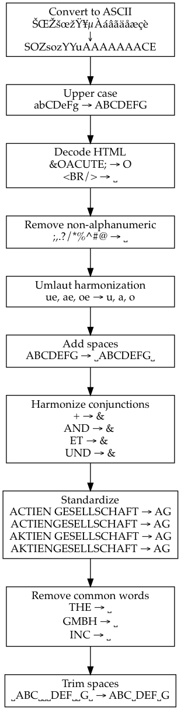

The R package harmonizer standardizes (harmonizes) organizational names.
The task of merging large datasets becomes more common these days as more and more data is coming. However, there is still no standard tool for that task according to Thoma et al. (2010).
Initially this task was performed manually (e.g., Griliches, 1981) and relatively recently some automatic tools start to emerge. This package is meant to a framework for name harmonization procedures and consolidate prior efforts of researchers that were working on the similar task.
This R package currently includes contributions of Thoma et al. (2010), Magerman et al. (2006) and Cockburn et al. (2009) with number of additional cleaning procedures.
The detailed procedures can be found here:
Harmonization of names is a separate tasks from name matching. Most of the harmonizing procedures works separately on an individual string and independent on the corpus of names. Nevertheless, some of harmonization procedures can also consider the whole corpus of names for harmonizing, e.g., as it is a case in Magerman’s umlaut harmonization procedure. Processing of such procedures can not be done now in parallel.
This is work in progress. Please, file an issue or a suggestion if you have any.
Magerman, T., Looy, V., Bart, & Song, X. (2006). Data Production Methods for Harmonized Patent Statistics: Patentee Name Harmonization (SSRN Scholarly Paper No. ID 944470). Rochester, NY: Social Science Research Network. Retrieved from http://papers.ssrn.com/abstract=944470
Thoma, G., Torrisi, S., Gambardella, A., Guellec, D., Hall, B. H., & Harhoff, D. (2010). Harmonizing and combining large datasets - an application to firm-level patent and accounting data. National Bureau of Economic Research Working Paper Series, (15851). Retrieved from http://www.nber.org/papers/w15851 http://www.nber.org/papers/w15851.pdf
The package provides its main function harmonize that expect character vector of organization names as input and returns its harmonized version.
org.names.test <- c("žŸong-ÃÇÈÏ\n\u00b5ó\u00b5<p>, LTD Co; "
, "<br> the $(Ldt & CóMP) Ïotta INt"
, "Masha &Lena Ltd. (Spb)"
, "bla-bla-bla Ltd.")
data.frame(harmonized = harmonize(org.names.test)
, original = org.names.test)
# harmonized original
# 1 ZYONG ACEI UOU žŸong-ÃÇÈÏ\nµóµ<p>, LTD Co;
# 2 IOTTA INT <br> the $(Ldt & CóMP) Ïotta INt
# 3 MASHA & LENA Masha &Lena Ltd. (Spb)
# 4 BLA BLA BLA bla-bla-bla Ltd.Harmonization procedures are flexible and can be specified with setting procedures option like so:
org.names.test %>%
harmonize(procedures = list(
list("harmonize.toascii", detect.encoding = FALSE)
, "harmonize.remove.brackets"
, "harmonize.toupper"
, list("harmonize.squish.spaces", wrap.in.spaces = TRUE)
, "cockburn.replace.punctuation"
, "harmonize.squish.spaces"))The default harmonization procedures are described in the literate source file.
Useful for big data tables. The option progress.by tells how often to update the progress. (If you have 107 records it is recommended to set progress.by as 105 or more.) Setting this option will slow the harmonization down a little.
The package can generate simple visualization for harmonization algorithm (procedures). For example:

Knowing ground truth whether any two text strings that represents organizational names are the same organizational name or assuming that some algorithm produces such ground truth the package uses simple well known statistics (see table below) of pair-wise name comparison to assess relative performance of specific algorithm.
| Same set by ground truth | Different sets by ground truth | |
|---|---|---|
| Same set by algorithm | True Positive (TP) | False Positive (FP) |
| Different sets by algorithm | False Negative (FN) | True Negative (TN) |
Relative performance metrics:
Balasubramanian, N., & Sivadasan, J. (2010). NBER Patent Data-BR Bridge: User Guide and Technical Documentation (SSRN Scholarly Paper No. ID 1695013). Rochester, NY: Social Science Research Network. Retrieved from http://papers.ssrn.com/abstract=1695013
Bosch-Capblanch, X. (2011). Harmonisation of variables names prior to conducting statistical analyses with multiple datasets: an automated approach. Bmc Medical Informatics and Decision Making, 11. http://doi.org/10.1186/1472-6947-11-33
Callaert, J., Du Plessis, M., Grouwels, J., Lecocq, C., Magerman, T., Peeters, B., … Vereyen, C. (2011). Patent statistics at eurostat: Methods for regionalisation, sector allocation and name harmonisation. Retrieved from https://lirias.kuleuven.be/bitstream/123456789/312061/1/2011-07-05
Codes, E. M. (2006). WORLD PATENTS INDEX. Retrieved from https://www5d.delphion.com/derwent/docs/patentee_codes.pdf
Du Plessis, M., Van Looy, B., Song, X., & Magerman, T. (2010). Data production methods for harmonized patent statistics: Patentee sector allocation 2009. Retrieved from https://lirias.kuleuven.be/handle/123456789/264237
Li, G.-C., Lai, R., D’Amour, A., Doolin, D. M., Sun, Y., Torvik, V. I., … Fleming, L. (2014). Disambiguation and co-authorship networks of the U.S. patent inventor database (1975–2010). Research Policy, 43(6), 941–955. http://doi.org/10.1016/j.respol.2014.01.012
Lissoni, F., Coffano, M., Maurino, A., Pezzoni, M., & Tarasconi, G. (2010). APE-INV’s “Name Game” algorithm challenge: A guideline for benchmark data analysis & reporting. Version, 1, 875–889.
Peeters, B., Song, X., Callaert, J., Grouwels, J., & Van Looy, B. (2010a). Harmonizing harmonized patentee names: an exploratory assessment of top patentees. Retrieved from https://lirias.kuleuven.be/handle/123456789/264238
Peeters, B., Song, X., Callaert, J., Grouwels, J., & Van Looy, B. (2010b). Harmonizing harmonized patentee names: an exploratory assessment of top patentees. Retrieved from https://lirias.kuleuven.be/bitstream/123456789/264238/1/2010-03-18
Pesenhofer, A., Berger, H., & Dittenbach, M. (2011). Offering New Insights by Harmonizing Patents, Taxonomies and Linked Data. In M. Lupu, K. Mayer, J. Tait, & A. J. Trippe (Eds.), Current Challenges in Patent Information Retrieval (Vol. 29, pp. 357–371). Dordrecht: Springer. Retrieved from ://WOS:000290417900018
Raffo, J., & Lhuillery, S. (2009). How to play the “Names Game”: Patent retrieval comparing different heuristics. Research Policy, 38(10), 1617–1627. http://doi.org/10.1016/j.respol.2009.08.001
Van der Loo, M. P. (2014). The stringdist package for approximate string matching. The R Journal, 6, 111–122.
Wasi, N., Flaaen, A., & others. (2015). Record linkage using Stata: Preprocessing, linking, and reviewing utilities. Stata Journal, 15(3), 672–697.
Winkler, W. E. (2006). Overview of record linkage and current research directions. Bureau of the Census. Retrieved from http://citeseerx.ist.psu.edu/viewdoc/summary?doi=10.1.1.79.1519